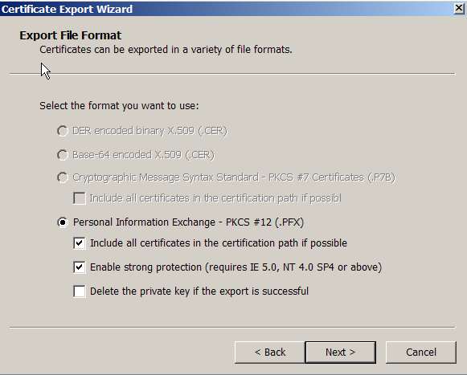
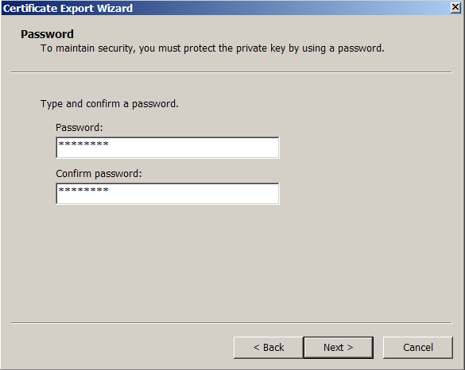
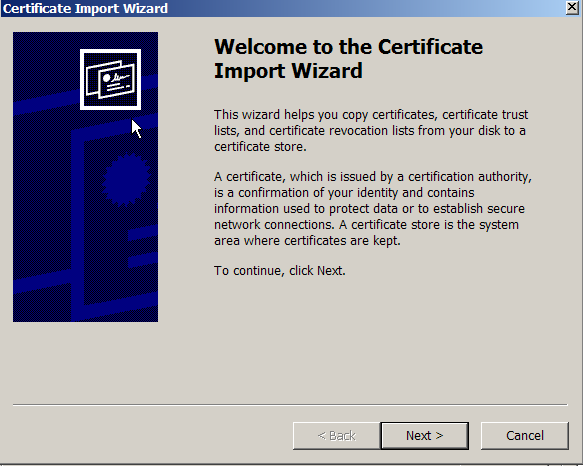
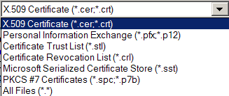
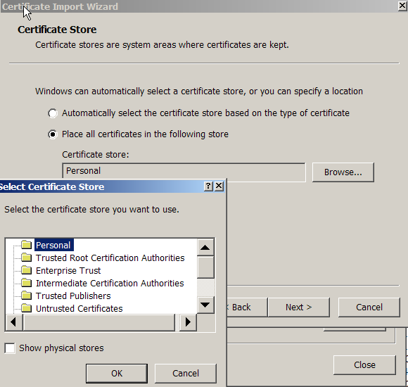
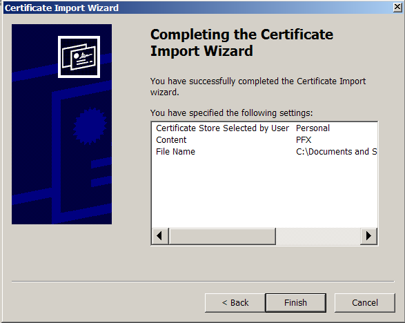

This howto was contributed to the EJBCA project by SensorNet.
|
Internet Explorer (IE) stores
certificates for all Microsoft applications because they all share the
same security context. This architecture means that a flaw in Internet
Explorer affects all of Windows, and vice versa. Therefore, if you
choose to use Internet Explorer for browsing, you must be extra careful
to keep your PC secure. We strongly recommend that you consider the
much more modern and secure Mozilla browser. You will be glad that you
did.
|
|
Contents
|
|
|
|
Accessing your
certificates
|
To access your certificate cache
in IE, in the Tools menu,
select Internet Options and
then the Content tab (Figure
1).
|
|

Figure 1.
|
|
Click the certificates tab to
display your certificate store (Figure 2).
|
|

Figure 2.
|
|
Exporting
your certificate and keys
|
The first thing you want to do
is to export your certificate so that it is backed up in a safe place,
and also so that you can then import it into other browsers on this or
other computers. Select you identity as shown above and click the Export button. The Certificate
Export Wizard will appear (Figure 3).
|
|
|
Figure
3.
|
|
Click Next, and then choose to export the private key (Figure 4).
Without the private key, the certificate is only useful to others.
|
|

Figure 4.
|
Click Next, and the Export File Format screen will
appear (Figure 5). Make the selections shown below. The PKCS #12
format is the standard format understood by other browsers. Include the
certificates in the path so that the SensorNetCA certificate will be
included in the export. For sure, enable strong protection. Without
that, your private key will be unprotected.
|
|

Figure 5.
|
|
Because you enabled strong
protection, a password box will appear when you click Next as shown in Figure 6. Be sure
to choose a good password -- at least 8 characters including letters,
numbers, and special characters with no dictionary words.
|
|

Figure 6.
|
|
Choose the file name for the
exported key (Figure 7). I always make a special directory on my hard
disk (and protect it so that only I have access) to store my keys in.
Unfortunately, Microsoft insists on using the ".pfx" file extension for
this rather than the more universal ".p12".
|
|

Figure 7.
|
|
You then get a chance to review
your choices in the final screen of the Wizard (Figure 8).
|
|

Figure 8.
|
|
When you click Finish, you will
get a pop-up asking for your CryptoAPI Private Key (Figure 9). This is
the password you originally used to protect the certificate when you
obtained it from the SensorNetCA. Never
check the "Remember password" box.
|
|

Figure 9.
|
|
Finally you are done! Be sure to copy your
exported certificate to a floppy or a CD so that it is stored
off of your computer in case you need to rebuild it, loose a hard
drive, etc. Go look at the instructions for Mozilla to see how much
easier this is.
|
|
Trusting the
SensorNetCA
|
The next thing to do is to make
sure that you trust the SensorNet Certificate Authority. Start at the
screen in Figure 2 and select the Trusted
Root Certification Authorities
Tab. You might have to scroll the horizontal arrows near the top-right
of the dialog in order to access this tab. You should be able to
find the SensorNetCA listed (Figure 10). The SensorNetCA certificate
should have been imported automatically when you obtained your
SensorNet Certificate.
|
|

Figure 10.
|
|
In
case you cannot find the
SensorNetCA listed, you will have to import it manually into IE. To do
this, go to https://ca.sensornet.org:8442/ejbca/publicweb/webdist/index.html
to access the SensorNet certificate retrieval page (Figure 11). Click
the "Fetch CA and OSCP certificates" link.
|
|

Figure 11.
|
|
Click the link blue link in
Figure 12 for Internet Explorer to import the SensorNet CA certificate.
The OSCP responder certificate allows your browser to check the
validity of certificates whenever they are used. However, you can only
choose one OSCP responder, so unless SensorNet is the only secure site
you use, do not get the OSCPResponder certificate.
|
|

Figure 12.
|
|
When the Import Certificate
Wizard comes up, be sure to select the certificate store manually.
Choost the Trusted Root Certification Authorities store. Then return to
Figure 10 and find the SensorNetCA certificate.
Click the Advanced button to
display the purposes for which you trust this certificate (Figure 13).
They are probably all checked by default, but if not, make sure you
check them all. This is not a very good situation because trust should
not be enabled by default!
|
|

Figure 13.
|
|
Importing
your certificate and keys
|
Start from Figure 2 and click
the Import button. The Import
Certificate Wizard will appear (Figure 14).
|
|

Figure 14.
|
|
You must then find the file for
the certificate you wish to import (Figure 15). In the browse file
selection window, you may need to change the file selection type to see
the different certificate types that can be imported (Figure 16)
|
|

Figure 15.
|

Figure 16.
|
|
Clicking Next will bring up a
password dialog (Figure 17). This is the password you used when you
exported the certificate in Figure 6. Be sure to check the boxes
to enable strong protection and to mark the key as exportable. It is
unfortunate that every default chosen by Microsoft leads to the lowest
level of security possible, so you must continually override their bad
intentions.
|
|

Figure 17.
|
|
The next screen allows you to
choose the key store for the certificate. If it is one of your
certificates, use the default personal store. Otherwise, select one of
the choices from the pop-up launched by the Browse button (Figure 18).
If unsure, select the automatic radio button.
|
|

Figure 18.
|
|
Finally, the Wizard completion
screen appears (Figure 19). But once again, Microsoft firces you to set
the security to a higher level.
|
|

Figure 19.
|
|
The "Importing a new private
exchange key" pop-up appears with the security level set to Medium
(Figure 20).
|
|

Figure 20.
|
|
Just as you did when you
originally got your SensorNet certificate, click the "Set Security Level" button and
select "High" in Figure 21.
|
|

Figure 21.
|
|
Again you will be asked for a
password to protect this item. It is the one for the CryptoAPIKey you
used in Figure 9. You should then (finally!) see the Figure 20 with the
secutity Level set to High. Click OK, and the certificate will
appear in your cache.
|
|